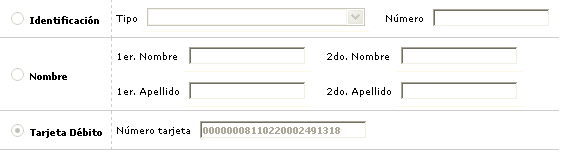
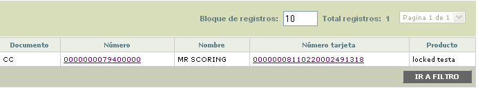

Consulta de clientes
Este formulario le permite a la entidad realizar la búsqueda de un cliente o una tarjeta débito en la base de datos y permite la consulta por el tipo y número de identificación, por uno o los dos nombres o apellidos, o por un número de tarjeta en particular.
La opción está compuesta por un filtro donde el usuario ingresa los criterios desados y como resultado el sistema le muestra todos los registros de clientes coincidentes con la búsqueda efectuada.

Descripción de campos
Identificación |
Radio button en el cual se le indica al sistema que la búsqueda se va a efectuar para un tipo y número de documento de identificación en particular. Por defecto, al ingresar al formulario es la opción seleccionada. |
Tipo |
En este campo campo tipo combo el usuario puede seleccionar el tipo de documento asociado con el cliente que se desea consultar en la base de datos. |
Número |
Campo alfanumérico de 16 posiciones, en el que se ingresa el número asociado al documento seleccionado en el campo anterior. |
Nombre |
En caso que la búsqueda se desee efectuar con base en el nombre y/o apellidos del cliente, en esta radio button se marca para indicarle al sistema el tipo de consulta que se requiere hacer. |
1er Nombre |
Campo alfanumérico de 60 posiciones, no obligatorio, en el cual se ingresa el primer nombre del cliente personasnatural o la razón social de la persona jurídica para la cual se desea consultar la información. |
2do Nombre |
En este campo alfanumérico de 25 posiciones, no obligatorio, se registra el segundo nombre correspondiente al cliente persona natural para el que se desea efectuar la consulta. |
1er Apellido |
Campo alfanumérico de 20 posiciones, no obligatorio, en el cual se ingresa el primer apellido del cliente para el cual se desea efectuar la búsqueda en la base de datos. |
2do Apellido |
Este campo alfanumérico de 20 posiciones, no obligatorio, permite consultar en la base de datos a partir del segundo apellido del cliente cuando este es una persona natural. |
Tarjeta |
Campo alfanumérico de 23 posiciones, no obligatorio, en el cual se ingresa el número de tarjeta que se desea consultar. |
Una vez que se han ingresado los datos requeridos, el sistema trae un nuevo formulario en el cual se muestran todos aquellos registros de la base de datos que coinciden con los criterios seleccionados. En el formulario de resultados el campo número identificación contiene un hipervínculo que invoca el formulario con los datos de un cliente en particular y el número de tarjeta un hipervínculo que trae el detalle de la misma
